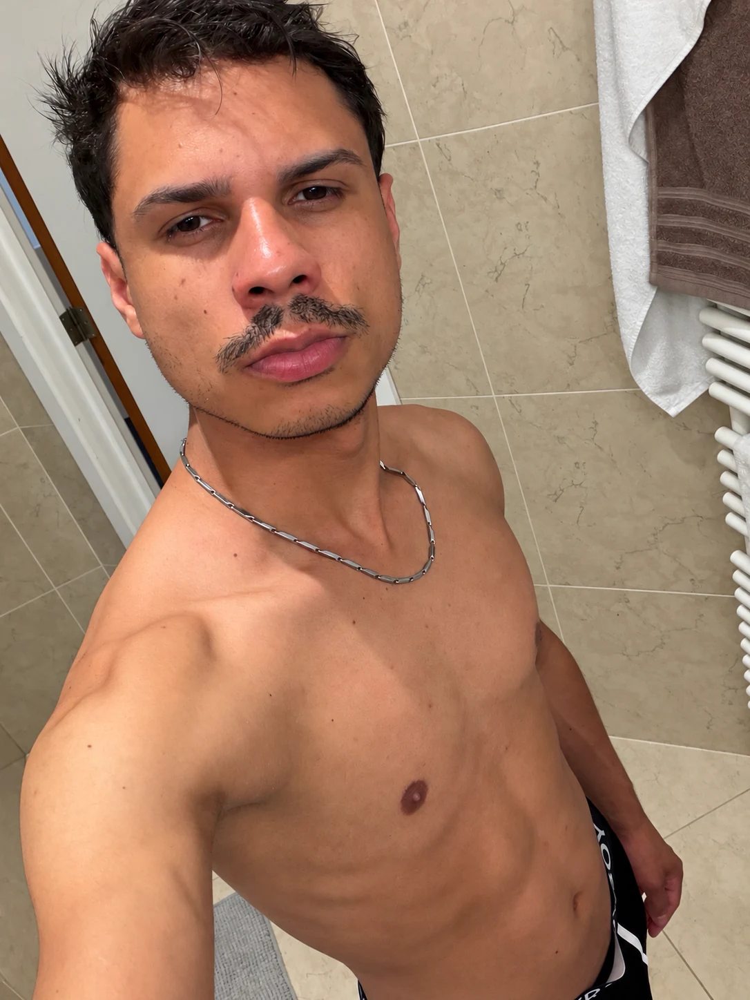

01
Lussan
Naturalidade, personalidade e um olhar atento aos detalhes.
LUSSAN & PEDRO · 18+
Conteúdo exclusivo para maiores de 18 anos. Confirme a sua idade para continuar.
Esta declaração não constitui uma verificação de idade.
LUSSAN & PEDRO
Este conteúdo está reservado a adultos. Pode fechar esta página.